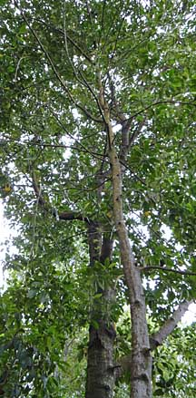
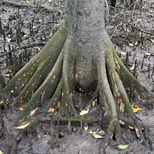
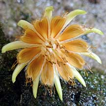
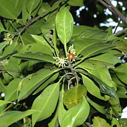
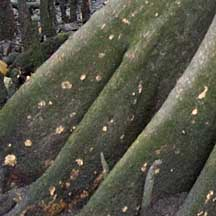
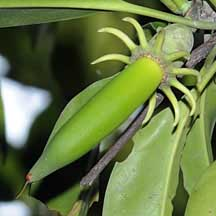
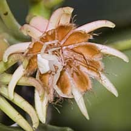
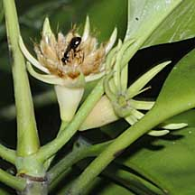

|
|
| plants text index | photo index |
| mangroves > Bruguiera in general |
| Bakau
mata buaya Bruguiera hainesii Family Rhizophoraceae updated Jan 2013 Where seen? This beautiful mangrove tree is rare in Singapore, with only a few known specimens; one at Pasir Ris, one at Kranji Nature Trail and two at Pulau Ubin. According to Tomlinson, it is infrequent on the inland side of the mangroves in regions not regularly flushed by normal tides. According to Giersen, occurs on the landward margins of mangroves in relatively dry areas that are only inundated during the spring tides. Globally, it is considered "very rare" with "a limited and patchy distribution" with approximately 200 known mature trees. According to Tomlinson, it is widely distributed from south Myanmar and Thailand through the Malay archipelago to Papua New Guinea but it has not been recorded from Queensland. It is also known as Berus mata buaya. Features: Tall tree to 33m with a trunk up to 70cm in diameter. Bark brown to grey with yellowish brown pimples (lenticels) from top to base, sometimes smooth. Short buttress often with lenticels, and knee roots. Leaves eye-shaped (9-16cm long) stiff leathery glossy, arranged opposite one another. Flowers larger than B. cylindrica (about 2cm) in clusters of 2-3 flowers on short stalks. Calyx is pale green with 10 stout long lobes forming an umbrella shape. Petals are white turning orangey brown, hairy with 2-4 bristles at the tips. The petals of the flower hold loose pollen and are under tension. When probed at the base, the petal unzips to scatter a cloud of pollen over the head of the visiting insect. The flowers are believed to be pollinated by day-flying insects. Propagule develops on the parent plant: the hypocotyl is cigar-shaped (9-22cm long), slightly thickened towards the end, slightly curved. Green ripening dark purple. The calyx lobes are extended at right angles to the hypocotyl, like an umbrella over the hypocotyl. According to Tomlinson, the small flowers are pollinated by day flying insects such as butterflies. The petals of the flower hold loose pollen and are under tension. When probed at the base, the petal unzips to scatter a cloud of pollen over the head of the visiting insect. Status and threats: This plant is listed as 'Critically Endangered' on the Red List of threatened plants of Singapore, as well as globally on the IUCN Red List. |
 Pulau Ubin, Jan 11  Kranji Nature Trail, Dec 10 |
|
 Tassels on petal tips. Fresh petals white, turning orange. Kranji Nature Trail, Jun 11 |
 Medim-sized flowers, each on one stalk. Calyx usually pinkish or yellowish. Pulau Ubin, Jun 09 |
 Lenticles on buttress roots. Kranji Nature Trail, Dec 10 |
|
 Sepals held away from the propagule. Pulau Ubin, Jun 09 |
 Crab spider lurks to pounce on insect visitors. Pulau Ubin, Jul 09 |
 Insect visitor to flower. Pulau Ubin, Jul 09 |
| Bakau mata buaya on Singapore shores |
| Photos of Bakau mata buaya for free download from wildsingapore flickr |
| Distribution in Singapore on this wildsingapore flickr map |
|
Links
References
|
|
|